Game Objects
This lesson focuses on putting the editor to use in order to perform various tasks: creating objects, running the game, searching, and manipulating objects by scaling, rotating, translating, and using the Area component, and the effects of the ParentingTool.
Create a New Project
Level Setup
Here is our new empty level:

The level is not actually empty because there is a Camera object (notice the
 in the Level window) as well as other objects that come with a level by default:
in the Level window) as well as other objects that come with a level by default:

Create a Game Object
Select Menu
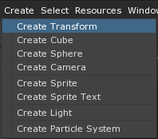
Notice that the Transform object can be found in the Objects Window:

- In the Objects Window
- Click on the Transform object
- If the Properties Window is not visible, then enter the Command:
Propertiesin the Search Window. (Remember you can open the Search Window from any where in the engine usingCtrl+Shift+Space.)
The properties of the Transform object can be found in the Properties Window:

In the Properties Window
- Click on the
 next to the Transform component
next to the Transform component
- Click on the
This displays the properties of the Transform component:
When accessing properties using the we use the term “Under”. For instance:
- In the Properties Window
- Under the Transform Component
- Set Scale To: [2, 2, 1]
- Under the Transform Component
You would have to press the to see the Scale Property that is listed under the Transform component.
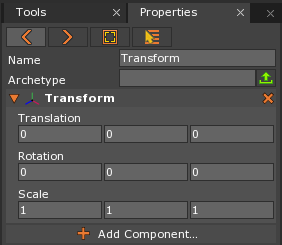
The Transform component provides the Translation (position), Rotation, and Scale of an object.
An object has been created at the center of the level, but we can’t see it yet. Let’s add a visual component to our game object.
Adding a Component
- In the Properties Window
- Click the
 button
button
- Click the
This brings up the Add Component drop down:

- Start typing: “Sprite”
The Sprite component should appear in the drop down selection:
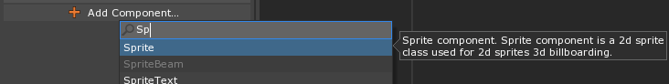
- Click on Sprite to add a Sprite component
In the Properties Window, we can see that the Transform object now has a Sprite component:
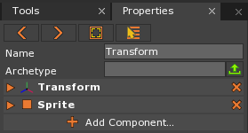
You can also add components to a selected object by using the hotkey Ctrl+M.
The Sprite component provides a 2D visual representation of the Transform object. In the Level Window, we can see the Transform object’s Sprite:
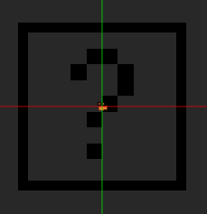
The question mark is the visual representation of the Sprite object known as a SpriteSource. We won’t go into much detail about what exactly is a SpriteSource and how they work just yet. Instead, we just need to know that the square with the question mark inside is the DefaultSprite.
Changing the Name of an Object
In the Objects Window
- Select the Transform object by clicking on it

In the Properties Window
Set Name to: Square

Under Sprite
- Set SpriteSource to: Square
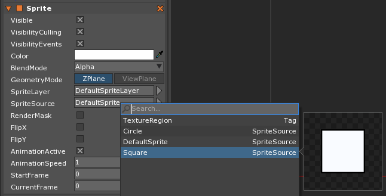
Making a Copy of an Object
- Select the Square object
- Duplicate it:
- Press
Ctrl+Cto copy it - Press
Ctrl+Vto paste a new copy
- Press
Notice how there are 2 Square objects in the Objects Window, but we only see one in the Level Editor.
- Select a Square object
- In the Properties Window
- Set Name to: BlueSquare
- Under Transform
- Set Translation to: [5, 0, 0]
- Under Sprite
- Click on the 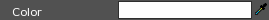 Color property
The following window should appear:
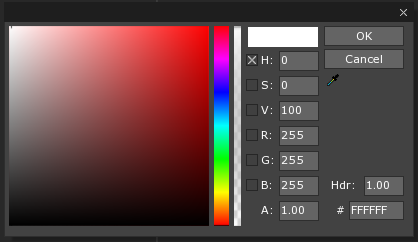
Set Color to: [R:0, G:128, B:255, A:1.00]
Click the OK button

The level should look like this:

Running the Game
There are multiple ways to run the game in the editor.
- Press
F5key on the keyboard - Press the button
- Command :
PlayGameor
Here is how the game should look:

Changing Visibility
We are able to choose whether or not a sprite is visible when the level starts by setting the Sprite component’s Visible property to True or False.
Many properties are simply flags that mark something as on or off, true or false. In the Zero Engine these types of properties are shown as a checkbox.
Those checked are True, those unchecked are False.

Notice SelectChildren is set to: False and SelectRoot is set to: True
In the Properties Window
- Under Sprite
- Set Visible to: False
- Under Sprite
{kind=link}
The Square object is not visible, but keep in mind that it is indeed still there.
- Stop the Game
- Select the Square object
- In the Properties Window
- Under Sprite
- Set Visible to: True
- Under Sprite
Translate Tool
Another way to move objects around in the editor is by using the TranslateTool. This is a tool located in the Tools Window.
- In the Tool Bar
- Click the
 button
button
- Click the
- Select the BlueSquare object
You should see colored arrows and a small white box:

These arrows lay on the X (red), Y (green) and Z (blue) axes of object.
- Click and drag along one of these colored arrows to move the object along one of the axes
- Click and drag the mouse from the white box in the center to translate on all axes at once
Notice that in the Properties Window, the Translation values are changing while you move the object.
Rotate Tool
The RotateTool is used to rotate objects.
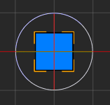
- In the Tool Bar
- Click the button
- Click on one of the circles (red, blue and green circles) and drag the mouse.
This rotates the object around its X (red), Y (green), or Z (blue) axes. In 2D, we usually just rotate around the Z-axis.
Scale Tool
The ScaleTool tool is used to scale objects.

- In the Tool Bar
- Click the 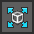 button
Colored lines with Boxes at the tips with a white box in the center will be drawn from the object.
- Click and drag along the colored axes
- Click and drag the mouse from the white box in the center to scale on all axes at once
This scales the object along its X (red), Y (green), or Z (blue) axes.
Notice that in the Properties Window, the Scale values are changing while you scale the object.
Manipulator Tool & Area Component
- Select the BlueSquare object
- In the Properties Window
- Under Transform
- Set Scale to: [5,1,1]
- Under Transform
- In the Properties Window
You may notice that there are some scaling artifacts that skews the borders

To create crisp borders, we can add the Area Component and scale via the manipulator tool.
-
In the Properties Window
- Under Transform
- Set Scale to: [1,1,1]
- Add the Area component

- Under Transform
In the Tool Bar
- Click the
 button
button
- Click the
You’ll see points in which you can grab to change the scale of the object:
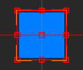
You can see that scaling no longer affects the borders:
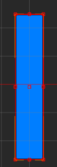
Now the edges are nice on our sprite. This is because the default Square sprite already has feature know as nine slice scaling enabled, here is how it works.
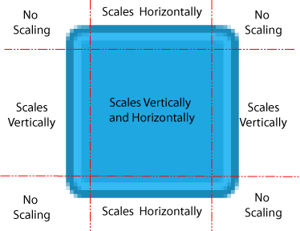
Nine slice scaling is enabled through the sprite source editor which you will see in a later lesson.
ParentingTool
In the Properties Window
Under Transform
Set Rotation to: [0, 0, 45]
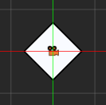
In the Level Window
Press
4to switch to the Scale ToolMake the Square bigger along the green y-axis

You may have expected it to change into a diamond shape, but instead it created a larger square.
The Transform’s properties always affect the object in the same way. It applies the Scale first, Rotation second, and Translation third, because of this order of operations the scale acts as if it is scaling an object that wasn’t rotated.
What if that was our intended behavior? What if wanted that diamond shape? We can layer apply another Transform’s set of scales, rotations, and translations by adding a parent.
In the Level Window
Press
0to switch to the Parenting ToolLeft Click + Drag from the Square to the BlueSquare.

You Left Click + Drag from the child to the parent. The arrow is pointing at the new parent.


You can see the Parent-Child relationship among the objects in the Objects Window
Press
4to switch to the Scale ToolMake the BlueSquare bigger along the green y-axis
Now you can see the child Square has stretched into a diamond shape.
{kind=link}
Now it works because the scale of the parent object is applied after the rotation of the child object.
Warning
Beware, this non-uniform scaling is generally undesirable behavior. In graphics, non-uniform scaling makes things look warped and can introduce artifacts or errors. In physics, algorithms for determining if two objects collide are optimized by the shapes of the objects. By warping the shapes through non-uniform scaling the algorithms may no longer correctly apply and result in physics artifacts i.e things may collide when they shouldn’t or don’t collide when they should.
Usually the ParentingTool is used for grouping objects together, particularly when you want them to move together. The issue of non-uniform scaling only comes up with scaling, you are free to rotate and translate without running into artifacts.
Now we know how to create, save, and run our game projects, create and copy game objects, edit game object’s properties, change a Sprite’s visibility, and use the TranslateTool, RotateTool, ScaleTool, ManipulatorTool, and ParentingTool.